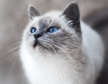
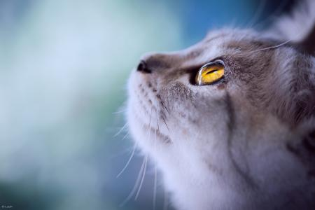
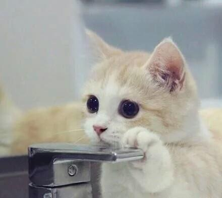

我的介绍

物种始源
猫，分多种，是鼠的天敌。各地都有畜养。有黄、黑、白、灰等各种颜色；身形像狸，外貌像老虎，毛柔而齿利（有几乎无毛的品种）。以尾长腰短，目光如金银，上腭棱多的最好。身体小巧，样子招人喜爱。好奇心重。

生活习性
猫行动敏捷，善跳跃。吃鱼，鼠，兔等。猫之所以喜爱吃鱼和老鼠，是因为猫是夜行动物，为了在夜间能看清事物，需要大量的牛磺酸，而老鼠和鱼的体内就含牛磺酸，所以猫不仅仅是因为喜欢吃鱼和老鼠，也是因为自己的需要才吃。

驯养方法
猫咪的训练要从幼时抓起，先要摸清猫咪的脾气，然后根据需要选择不同的方式来进行训练。以下几种方式可供选用：强迫、诱导、奖励、惩罚、喊叫。

喂养小知识
少食多餐，喂食要注意定时、定量、定点。 定时：每天在固定的时间喂食，养成良好的吃饭习惯。 定量：饭量不要忽多忽少，随着猫咪年龄的增加，在某一段时间里（一般三、四个月的时候）小猫的饭量逐渐增加，到八个月以上就保持稳定了。